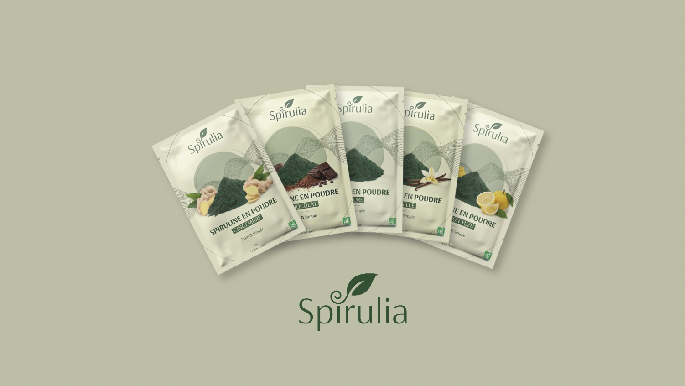
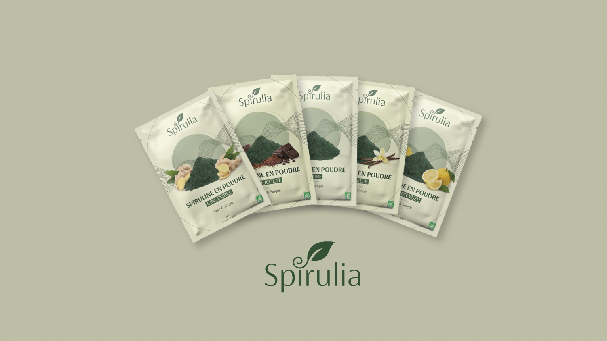

Réalisation d'un audit de communication
Diagnostic, positionnement, optimisation
Présentation du projet
Ce projet consiste en la réalisation d’un audit de communication pour la marque Spirulia, une marque de spiruline en poudre positionnée sur le bien-être.
L’objectif était d’analyser la communication de la marque et de proposer des recommandations de communication digitale cohérentes, adaptées à différents marchés.
L’audit s’appuie sur une étude globale de la marque : son identité, son positionnement, ses cibles et ses supports de communication.
Nous avons analysé la manière dont Spirulia se présente, les messages qu’elle transmet et la façon dont elle se distingue de ses concurrents.
Ce que j’ai fait
- Analyse du contexte et de l'univers de la marque
- Etude de l'identité visuelle et du positionnement
- Analyse des cibles
- Réalisation d'un benchmark concurrentiel
- Etude des canaux de communication
- Elaboration d'une stratégie de communication
- Adaptation de cette stratégie selon les marchés
- Propostion de recommandations concrètes
 
